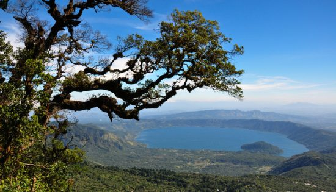
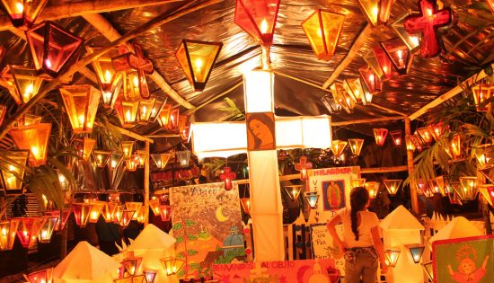
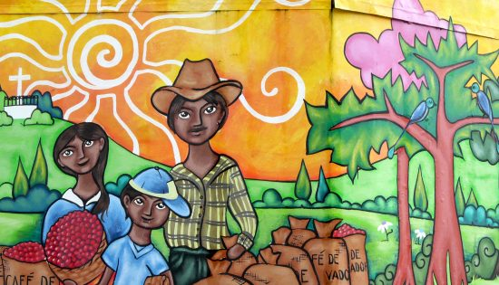
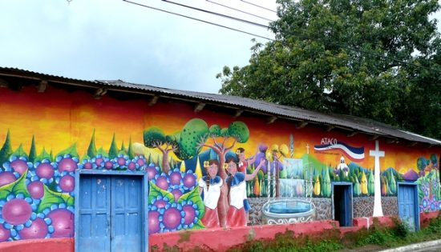

VOYAGE SALVADOR
L’ASSOCIATION VISION DU MONDE AU SALVADOR
Aujourd'hui, nous partons à la découverte de l'association Vision du Monde et de leur nouveau programme de parrainage au Salvador. Emilie, partie en février 2020 au Salvador pour mener cette mission à bien, nous raconte son expérience. Pouvez-vous vous présenter ainsi que l'association Vision du Monde ? Bien sûr, je suis Emilie, chargée de programmes au sein de Vision du Monde depuis 3 ans. Je m'occupe principalement de l'Amérique Latine ...
lire la suiteTOP 5 DES CHOSES À FAIRE AU SALVADOR
Destination méconnue du grand public, le Salvador vous invite pour un voyage confidentiel et insolite. Pour vous guider dans votre préparation, voici quelques idées pour personnaliser votre circuit ! 5 choses à faire lors de votre prochain voyage au Salvador. Dégustez ...
lire la suiteL’AUTHENTIQUE FÊTE DES LANTERNES AU SALVADOR
Vous aimez célébrer des fêtes authentiques et traditionnelles ? Je vous emmène aujourd’hui découvrir une des fêtes emblématiques du Salvador : el Día de los Farolitos ! La Fête des lanternes à Ahuachapan Cette tradition existe depuis plus de 150 ans. Chaque ...
lire la suiteEST-IL SÛR DE VOYAGER AU SALVADOR ?
Le plus petit pays d’Amérique Centrale est probablement aussi l’un des moins connus de la région. Sur la côte Pacifique entre le Guatemala et le Honduras, il offre un complément culturel et naturel aux autres pays de la région : région de montagne et café, volcans, villages coloniaux, artisanats et marchés, plages du Pacifique et cité maya de Joya del Ceren, unique dans la région (la lave d’un volcan a conservé ...
Lire la suiteLA ROUTE DES FLEURS AU SALVADOR
Située dans la partie ouest du Salvador, entre les villages de Sonsonate et d'Ahuachapan, il existe une route bien particulière qui se couvre de magnifiques fleurs colorées entre décembre et janvier. S’étendant sur 36 kilomètres, la route des fleurs traverse ...
Lire la suiteSUR LA ROUTE DES FLEURS ET DES VOLCANS
Hélène notre spécialiste Mexique et Amérique Centrale c'est récemment rendue au Guatemala, au Belize et au Salvador pour y dénicher des bons plans, activités et coins sympas. Elle vous raconte la dernière étape de ce voyage: la Route des Fleurs, le ...
Lire la suite